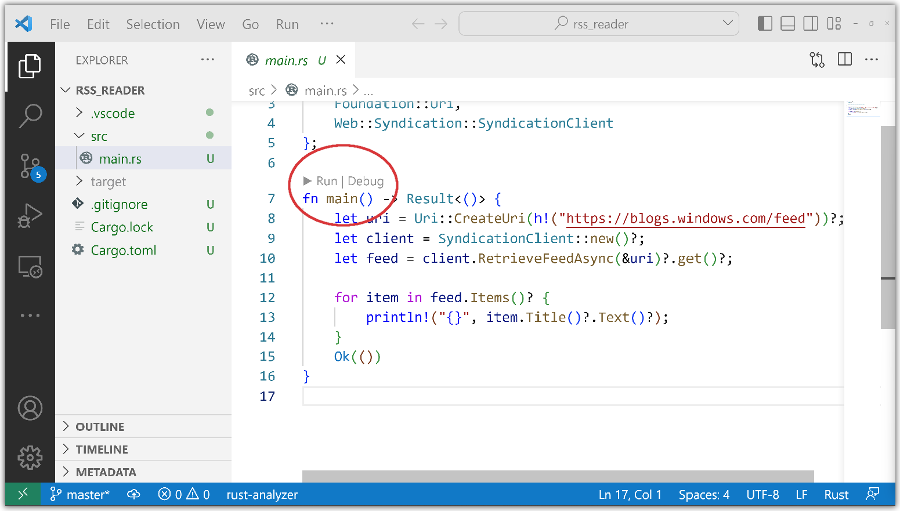
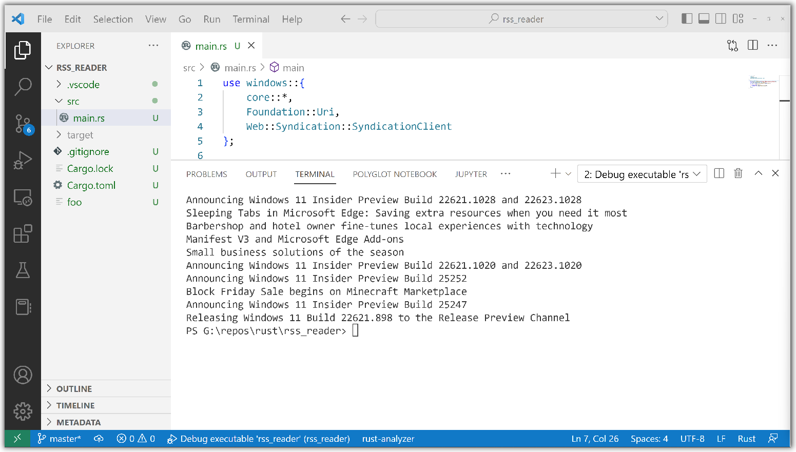

RSS reader tutorial (Rust for Windows with VS Code)
The previous topic introduced Rust for Windows, and the windows crate.
Now let's try out Rust for Windows by writing a simple console app that downloads the titles of blog posts from a Really Simple Syndication (RSS) feed.
Launch a command prompt (
cmd.exe), andcdto a folder where you want to keep your Rust projects.Using Cargo, create a new Rust project named rss_reader, and
cdto the newly-created folder:> cargo new rss_reader > Created binary (application) `rss_reader` package > cd rss_readerThen open the rss_reader project in VS Code.
code .Let's implement the main rss_reader project. First, open the
Cargo.tomlfile at the root of the project. ACargo.tomlfile is a text file that describes a Rust project, including any dependencies it has.Add a dependency on the windows crate, as shown in the listing below. The windows crate is large. To keep build times fast, we'll select just the
Foundation_CollectionsandWeb_Syndicationfeatures that we need for this code.# Cargo.toml ... [dependencies.windows] version = "0.43.0" features = [ "Foundation_Collections", "Web_Syndication", ]Then, open the rss_reader project's
src/main.rssource code file. There you'll find the Cargo default "Hello, world!" code. Add the following use statement to the beginning ofmain.rs:// src\main.rs use windows::{ core::*, Foundation::Uri, Web::Syndication::SyndicationClient }; fn main() { println!("Hello, world!"); }The use declaration shortens the path to the types that we'll be using. There's the Uri type that we mentioned earlier.
To create a new Uri, replace Cargo's default main function with this:
// src\main.rs ... fn main() -> Result<()> { let uri = Uri::CreateUri(h!("https://blogs.windows.com/feed"))?; Ok(()) }Notice that the return type of the main function is a Result, from windows::core::. That will make things easier, as it's common to deal with errors from operating system (OS) APIs. windows::core::Result helps us with error propagation, and concise error handling.
You can see the question-mark operator at the end of the line of code. To save on typing, we do that to use Rust's error-propagation and short-circuiting logic. That means we don't have to do a bunch of manual error handling for this simple example. For more info about this feature of Rust, see The ? operator for easier error handling.
Also notice the h! macro from the windows crate. We use that to construct an HSTRING reference from a Rust string literal. The WinRT API uses HSTRING extensively for string values.
To download the RSS feed, we'll create a new SyndicationClient.
// src\main.rs ... fn main() -> windows::core::Result<()> { let uri = Uri::CreateUri(h!("https://blogs.windows.com/feed"))?; let client = SyndicationClient::new()?; Ok(()) }The new function is a Rust constructor. All objects in the windows crate follow the Rust convention and name their constructors new.
Now we can use the SyndicationClient to retrieve the feed.
// src\main.rs ... fn main() -> windows::core::Result<()> { let uri = Uri::CreateUri(h!("https://blogs.windows.com/feed"))?; let client = SyndicationClient::new()?; let feed = client.RetrieveFeedAsync(&uri)?.get()?; Ok(()) }Because RetrieveFeedAsync is an asynchronous API, we use the blocking get function to keep the example simple. Alternatively, we could use the
awaitoperator within anasyncfunction to cooperatively wait for the results. A more complex app with a graphical user interface will frequently useasync.Now we can iterate over the resulting items, and let's print out just the titles. You'll also see a few extra lines of code below to set a user-agent header, since some RSS feeds require that.
// src\main.rs ... fn main() -> windows::core::Result<()> { let uri = Uri::CreateUri(h!("https://blogs.windows.com/feed"))?; let client = SyndicationClient::new()?; client.SetRequestHeader( h!("User-Agent"), h!("Mozilla/5.0 (compatible; MSIE 10.0; Windows NT 6.2; WOW64; Trident/6.0)"), )?; let feed = client.RetrieveFeedAsync(&uri)?.get()?; for item in feed.Items()? { println!("{}", item.Title()?.Text()?); } Ok(()) }Now let's confirm that we can build and run by clicking Run > Run Without Debugging (or pressing Ctrl+F5). If you see any unexpected messages, then make sure you've successfully completed the Hello, world! tutorial (Rust with VS Code).
There are also Debug and Run commands embedded inside the text editor. Alternatively, from a command prompt in the
rss_readerfolder, typecargo run, which will build and then run the program.
Down in the VS Code Terminal pane, you can see that Cargo successfully downloads and compiles the windows crate, caching the results, and using them to make subsequent builds complete in less time. It then builds the sample, and runs it, displaying a list of blog post titles.

That's as simple as it is to program Rust for Windows. Under the hood, however, a lot of love goes into building the tooling so that Rust can both parse .winmd files based on ECMA-335 (Common Language Infrastructure, or CLI), and also faithfully honor the COM-based application binary interface (ABI) at run-time with both safety and efficiency in mind.
Showing a message box
We did say that Rust for Windows lets you call any Windows API (past, present, and future). So in this section we'll show a couple of Windows message boxes.
Just like we did for the RSS project, at the command prompt
cdto the folder with your Rust projects.Create a new project named message_box, and open it in VS Code:
> cargo new message_box > Created binary (application) `message_box` package > cd message_box > code .In VS Code, open the
Cargo.toml, and add the Windows dependencies for this project:# message_box\Cargo.toml ... [dependencies.windows] version = "0.43.0" features = [ "Win32_Foundation", "Win32_UI_WindowsAndMessaging", ]Now open the project's
src/main.rsfile, and add theusedeclarations with the new namespaces (as shown below). And finally add code to call the MessageBoxA and MessageBoxW functions. The Windows API docs are mainly written with C/C++ in mind, so it's useful to compare the API docs to the docs for the Rust projections in the windows crate: MessageBoxA (Rust) and MessageBoxW (Rust).// src\main.rs use windows::{ core::*, Win32::UI::WindowsAndMessaging::* }; fn main() { unsafe { MessageBoxA(None, s!("Ansi"), s!("World"), MB_OK); MessageBoxW(None, w!("Wide"), w!("World"), MB_OK); } }As you can see, we must use these Win32 APIs in an
unsafeblock (see Unsafe blocks). Also note the s! and w! macros, which create LPCSTR and LPCWSTR arguments from Rust UTF-8 string literals; much like we created an HSTRING with the h! macro for rss_reader. Rust is natively Unicode with UTF-8 strings, so using the wide Unicode (W-suffix) Windows APIs is preferred over the ANSI (A-suffix) APIs. This can be important if you use non-English text in your code.
This time when you build and run, Rust displays two Windows message boxes.